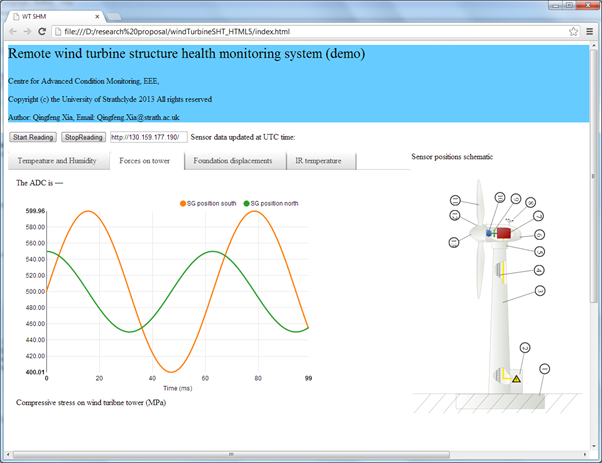

Personal information and research skills
Presented by Qingfeng Xia
@LinkedIn
ESC key to get the birdeye overview of this presentation
ResearchGate profile
Date today: 02/20/2021
Educations
-
2007.10-2012.2 PhD Aerospace Engineering
 University of Manchester
University of Manchester
Sponsored by: UK Overseas Research Scholarship (3 years’ tuition fee + stipends)
Output: 8 journal papers + 2 Open source software (Flowviz, openCL for OpenFOAM) -
Xi'an Jiaoting University2004.9-2007.5 ME, Power Manchinery
-
Xi'an Jiaoting University2000.9-2004.7 BE, Thermal Engineering
Working Experience
Timeline 2000-2014- RA at Rolls-royce UTC/Oxford ThermoFluids Institute, University of Oxford, Dec. 2014-Present
- RA at Turbo-Machinery Group, University of glasgow, Dec. 2013-Dec.2014
- RA at EEE University of Strathclyde , June 2012-Nov.2013
- Parttime TA and RA, University of Manchester, Oct. 2009-May 2012
- Thermal Engineer, Honywell RD Centre, China, June 2007-Oct. 2012
Personal Information
Name: Qingfeng Xia
Personal Email: University Email: search my name in the university, you will find it
Persoanl Website: http://www.iesensor.com
LinkedIn profile: qingfeng-xia
Overview of Research Skills
- Turbo machinery, Multi-phase flow, Flow control, Tribology
- CFD: Fluent, OpenFoam
- FEM: Ansys, Fenics
- Thermal system modeling, Simulink
- Image processing, Flow visualization, FreeCAD
- Machine learning, Big Data analysis, Database
- Sensor and Instrumentation, Control and automation,
- Condition monitoring, Structural health monitoring,
- Wireless Sensor Network (Zigbee/bluetooth)
- General programming, RTOS, Robotics, Embedded programming
Research at University of Manchester:
PhD Thesis:
Experimental study of active liquid mixing in laminar regime
Sponsored by: UK Overseas Research Scholarship
Output: 8 journal papers + 2 Open source software
Synthetic jet vs Continous jet
Synthetic jet has similar flow perturbation effect at Re about 2000 Ref: A comparison between synthetic jets and continuous jets. BL. Smith, 2003
Applicatio of synthetic jet to BL, heat and mass transfer
Smart mixer enabled by lateral synthetic jet pair
Flow visualization toolbox for PLIF, PIV, PSP, BOS
Self built PIV/PLIF system with continuous laser
openCL plugin for Openfoam developed in 2011
Research at University of Strathclyde
Developed the advantageous condition monitoring solution for the off-shore 7 MW wind turbine system
Achieved:- Structural Inspection Robot,
- Patentable research on strain gauges sensors
- Wind turbine drivetrain condition minitoring
- Developed web-based online structural health monitoring
- Developed wireless DAQ module and wireless charging
Developed web-based online structural health monitoring
Overview of Programming Skills
My open source software projects
Source hosted at Github and sourceforge
Arduino robot car with remote control
Mechanical engineering design
- Teach Solidworks
- Contributor to FreeCAD open source project
- data visualization using paraview